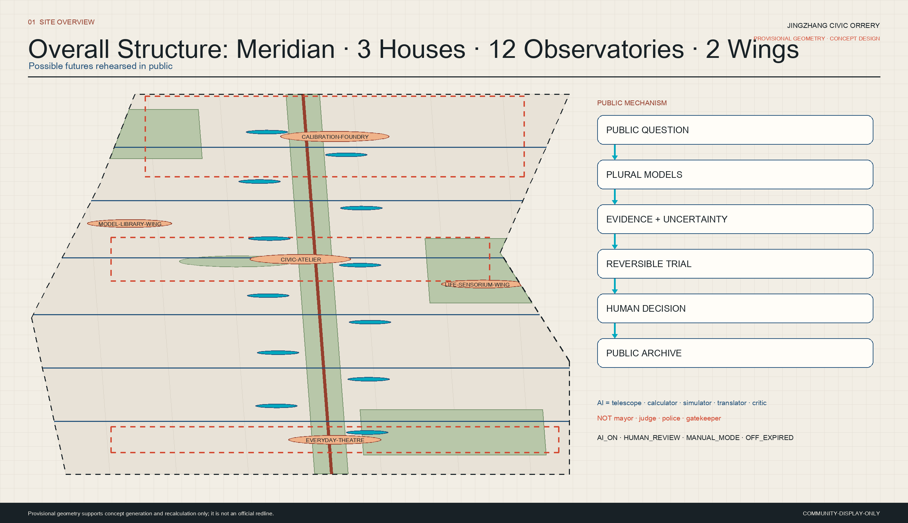
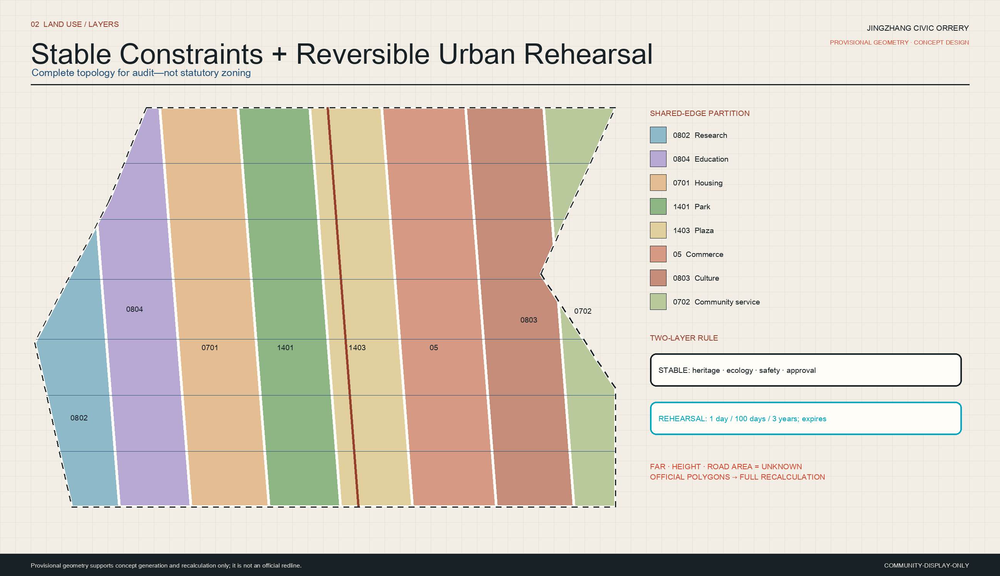
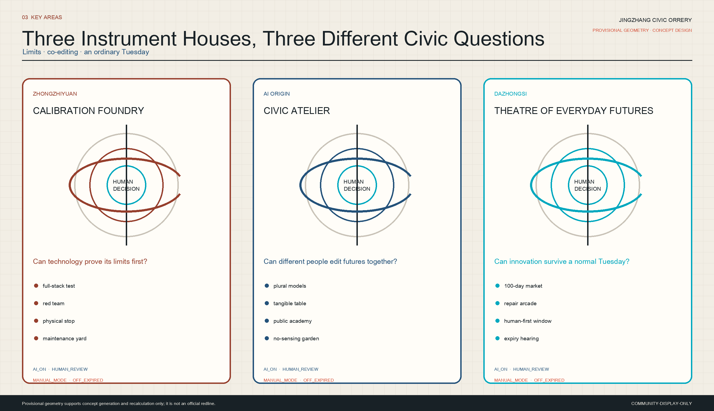
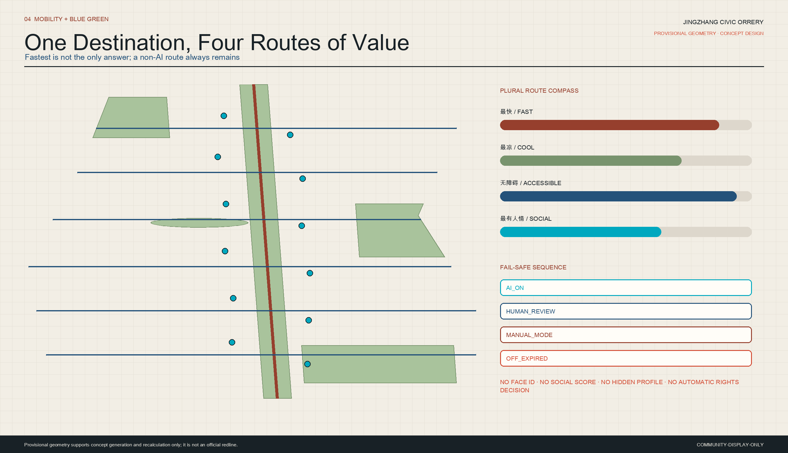
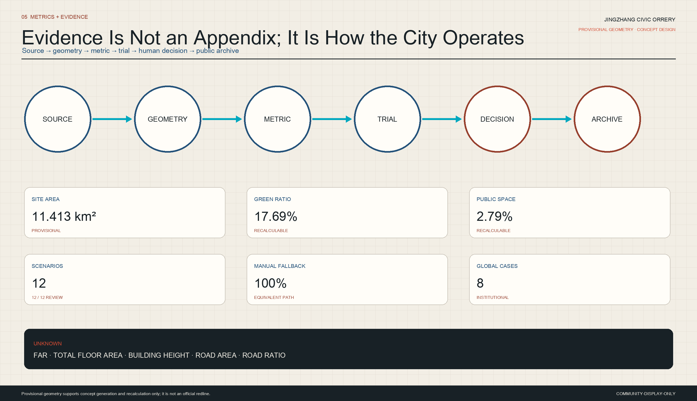

Chinese engineering turned measurement, standards, and revision into public connection.
1909 · 2026 · 2050 · 2126
FUTURE ARCHAEOLOGY
AI accelerates knowledge while making urban algorithms harder to inspect.
Prediction is abundant; shared comparison of distributional effects is scarce.
The best city can change its mind without abandoning anyone.
ONE · THREE · TWELVE · TWO
SPATIAL MOTHER STRUCTURE


CALIBRATE · CO-EDIT · LIVE
THREE INSTRUMENT HOUSES
Zhongzhiyuan · Calibration Foundry
Technology proves its limits before entering life.
AI Origin · Civic Atelier
Residents and developers compare and edit plural futures.
Dazhongsi · Theatre of Everyday Futures
Innovation must survive an ordinary Tuesday.

12 COMPLETE SCENE RECORDS
TWELVE FUTURE OBSERVATORIES
Three-Choice Commute Compass
Plural routes with static maps and staffed help.
AI_ON · HUMAN_REVIEW · MANUAL_MODE · OFF_EXPIRED
Shade Dividend
Non-personal environmental data serves shade and rest.
AI_ON · HUMAN_REVIEW · MANUAL_MODE · OFF_EXPIRED
Faceless Night Walk
Maintenance and staffed response replace biometric surveillance.
AI_ON · HUMAN_REVIEW · MANUAL_MODE · OFF_EXPIRED
Accessible City Rehearsal
Experience full-scale mock-ups before professional decision.
AI_ON · HUMAN_REVIEW · MANUAL_MODE · OFF_EXPIRED
Civic Repair Clinic
AI proposes a fault tree; a qualified human approves repair.
AI_ON · HUMAN_REVIEW · MANUAL_MODE · OFF_EXPIRED
One-Day City Academy
Follow evidence, disagreement, rehearsal, and human decision.
AI_ON · HUMAN_REVIEW · MANUAL_MODE · OFF_EXPIRED
Human-First Service Window
Refusing AI never reduces essential service.
AI_ON · HUMAN_REVIEW · MANUAL_MODE · OFF_EXPIRED
Market of 100 Tomorrows
Every service has evidence, repair, exit, and expiry.
AI_ON · HUMAN_REVIEW · MANUAL_MODE · OFF_EXPIRED
Parliament of Models
Models disagree in public; people decide whether to test.
AI_ON · HUMAN_REVIEW · MANUAL_MODE · OFF_EXPIRED
Xiaoyuehe Ecological Observatory
An anomaly triggers human inspection, not an ecological verdict.
AI_ON · HUMAN_REVIEW · MANUAL_MODE · OFF_EXPIRED
Maintenance Foresight Ticket
Workers can reject recommendations without penalty.
AI_ON · HUMAN_REVIEW · MANUAL_MODE · OFF_EXPIRED
Data Consent Lantern
Shows sensing, ownership, expiry, and the no-sensing path.
AI_ON · HUMAN_REVIEW · MANUAL_MODE · OFF_EXPIRED
SIMULATE · FENCE · REHEARSE · HEAR
REGULATED TESTS
EMBODIED AI
Physical stop · steward · speed/geofence · incident log · manual recovery.
MULTI-MODEL DECISION
Three alternatives + no-action · sources · uncertainty · affected groups · human chair.
100-DAY SERVICE MARKET
Operator · contract · lawful purpose · fallback · repair · expiry · deletion.

NO MODEL OWNS THE CITY
PARLIAMENT OF MODELS
PUBLIC QUESTION→PLURAL MODELS→REVERSIBLE TRIAL→HUMAN DECISION
AI_ON · HUMAN_REVIEW · MANUAL_MODE · OFF_EXPIRED
EPSG:4548 · SAME GEOJSON
RECALCULABLE METRICS
SITE AREA SQM11.413 km²provisional
GREEN RATIO17.69%design green
PUBLIC SPACE RATIO2.79%public instruments
SCENARIO NODE COUNT12observatories
HUMAN REVIEW COVERAGE RATIO100%human review
NON DIGITAL FALLBACK COVERAGE RATIO100%non-digital fallback

TRACEABLE · RECALCULABLE · CONTESTABLE
EVIDENCE AND GAPS
17registered sources
13explicit assumptions
23task requirements
5explicit unknown metrics
PROVISIONAL GEOMETRY · CONCEPT DESIGN · FULL RECALCULATION REQUIRED